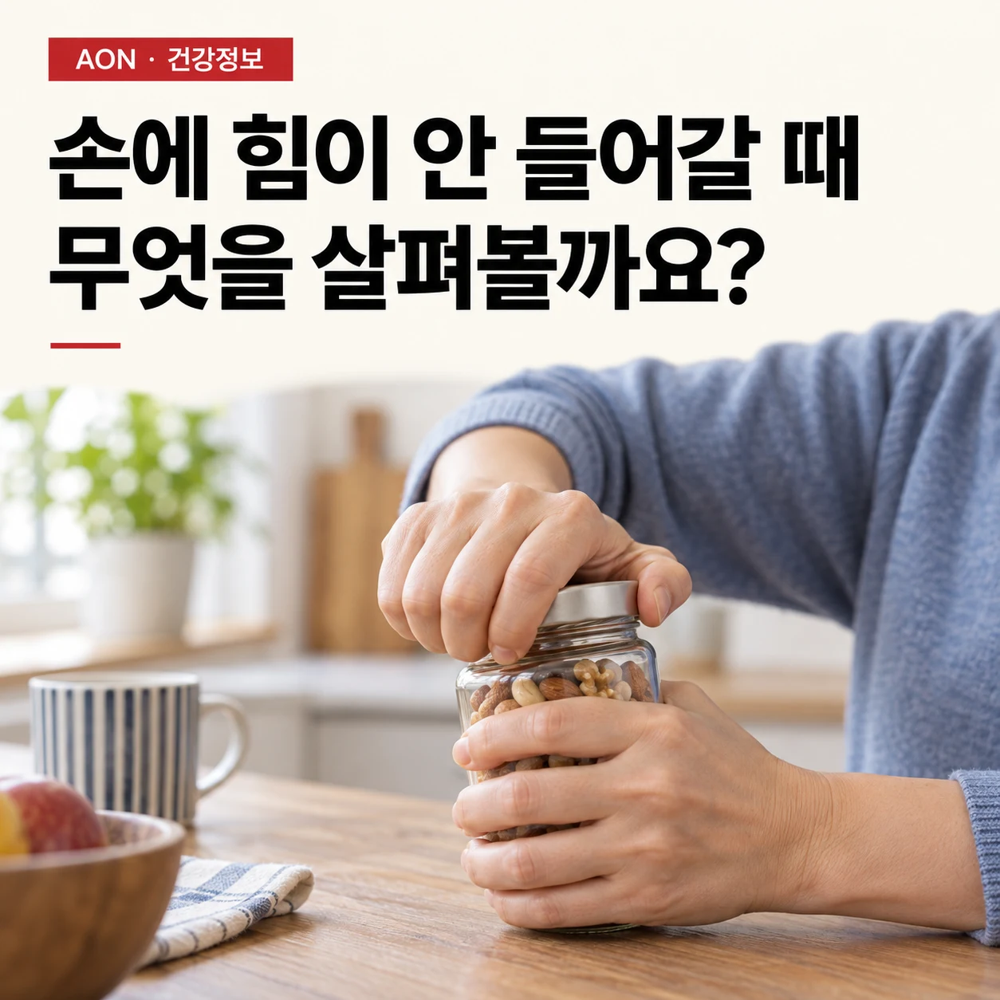
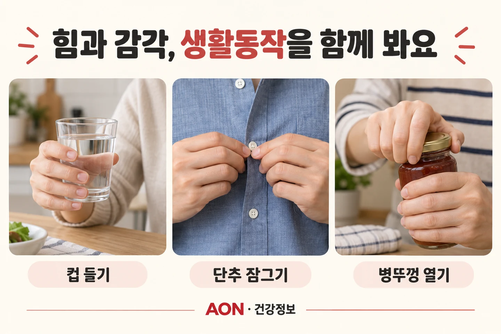

근육은 멀쩡한데 왜 손에 힘이 안 들어갈까요?
컵을 들고, 단추를 잠그고, 병뚜껑을 여는 손. 힘 빠짐을 근육 크기만으로 설명하지 않고 통증·감각·실제 생활동작을 함께 살펴봅니다.
손 · 감각과 기능 ·

이 글에서 살펴볼 내용
‘힘이 없다’는 말부터 조금 나눠봅니다
컵이 미끄러질 것 같고, 셔츠 단추가 전보다 오래 걸리고, 병뚜껑을 열 때 손에 힘이 모이지 않습니다. 겉으로 보기에 손과 팔의 근육은 그대로인데 왜 이런 느낌이 생길까요? 먼저 ‘아파서 끝까지 쥐지 못하는지’, ‘손끝 감각이 둔해서 물건을 놓치는지’, ‘힘은 나오지만 금방 지치는지’를 나눠볼 필요가 있습니다.
이 셋은 생활에서는 모두 힘 빠짐으로 표현되지만, 평가할 내용과 대응은 같지 않습니다. 근육이 눈에 띄게 줄지 않았다는 사실만으로 신경·힘줄·관절 문제까지 없다고 말할 수는 없습니다. ‘검사에서 근육에 큰 이상이 없었다’면 어떤 검사로 무엇을 확인했는지도 중요합니다.
다만 갑자기 한쪽 손이나 팔의 힘이 빠졌다면 아래 운동 이야기보다 응급 평가가 먼저입니다. 얼굴 비대칭이나 말 어눌함이 없더라도 갑작스러운 손 약화는 가볍게 넘기지 않습니다.[4] [5]
쥐는 힘은 근육만의 일이 아닙니다
물컵을 들 때에는 근육이 힘을 만들고, 힘줄이 그 힘을 전달하며, 관절이 움직임을 받쳐줍니다. 동시에 손끝에서 ‘얼마나 미끄러운지’와 ‘얼마나 단단히 잡았는지’에 대한 감각 정보가 들어옵니다. 따라서 힘의 크기뿐 아니라 감각과 움직임의 조절도 함께 봐야 합니다.
쥐는 동작에서 아프거나 손가락이 걸리는 경우, 저리고 감각이 둔한 경우, 특정 동작만 잘 되지 않는 경우를 같은 원인으로 묶지 않습니다. 진료·평가에서는 손 자체의 문제뿐 아니라 팔이나 목을 포함한 신경학적 원인을 살펴야 할 수도 있습니다. 인터넷 설명 한 가지에 맞춰 스스로 진단하지 않는 것이 중요합니다.
‘혈액순환이 안 돼서 그렇다’는 말 역시 모든 손 증상을 설명하지 못합니다. 예를 들어 손목터널증후군에서는 좁은 통로 안의 신경 압박과 신경의 혈류 변화가 관련될 수 있지만, 이것을 곧바로 전신적인 순환 부족이나 마사지가 필요한 상태와 같은 뜻으로 쓰면 안 됩니다.[2]
관절이 불편하면 힘을 충분히 쓰기 어려울 수도 있습니다
관절이 붓거나 아프면 근육을 충분히 쓰기 어려워질 수 있습니다. 하지만 손에 힘이 빠지는 이유를 이것 하나로 설명할 수는 없습니다. 관절 상태에 따른 근육 활성화의 변화를 ‘관절원성 근육 억제(AMI)’라고 하며, 이 글에서 참고한 종설은 무릎을 중심으로 다룹니다.[1]
조금 더 알아보기: AMI와 손의 힘 빠짐
관절원성 근육 억제, 즉 AMI는 관절의 상태가 달라진 뒤 그 관절을 움직이는 근육을 충분히 활성화하기 어려워지는 현상입니다. 쉽게 말하면 근육 자체의 크기뿐 아니라 근육을 동원하는 신경계 조절에도 변화가 생길 수 있다는 뜻입니다. Rice와 McNair의 종설은 무릎 관절의 부종·염증·느슨함·관절 감각신경 손상 등이 관절에서 들어오는 신호를 바꿀 수 있다고 설명합니다.[1]
여기서 순서를 혼동하면 안 됩니다. 부종·염증 등을 ‘AMI 때문에 반드시 생기는 네 가지 결과’로 외우는 것이 아니라, 관절의 감각 입력을 바꾸는 관련 요인으로 이해해야 합니다. 또 AMI는 신경이 끊어졌다는 뜻이나, 의지가 약해서 힘을 못 쓴다는 뜻도 아닙니다.[1]
이 종설의 중심 근거는 무릎입니다. 손목·손 증상을 이해하는 데 질문을 던져줄 수는 있지만, 무릎 연구만으로 특정인의 악력 저하가 AMI라고 입증되지는 않습니다. 손의 힘 빠짐에는 실제 근력 저하, 통증 때문에 제한된 힘 발휘, 신경 문제 등이 섞일 수 있으므로 증상과 검사 결과를 함께 해석해야 합니다.
저림과 서툴러짐이 함께 있다면 감각도 확인합니다
손목터널증후군은 손목 안쪽의 좁은 통로를 지나는 정중신경이 압박되는 문제입니다. 엄지·검지·중지와 약지 일부의 저림, 야간 불편, 단추 잠그기 같은 세밀한 동작의 어려움, 물건을 떨어뜨리는 일이 나타날 수 있습니다. 이때 물건을 놓치는 이유를 근육량 부족 하나로 설명할 수 없습니다.[2]
그렇다고 이 증상 목록에 몇 개 해당한다고 손목터널증후군으로 확정하는 것도 아닙니다. 미국정형외과학회의 2024년 지침은 의료진이 증상의 경과와 진찰을 묶어 평가하는 방법을 지지하며, 상황에 따라 초음파나 신경의 신호 전달과 근육 반응을 살피는 검사가 도움이 될 수 있다고 설명합니다. 모두에게 모든 검사가 필요한 것도, 악력 측정 한 번으로 진단이 끝나는 것도 아닙니다.[3]
특히 지속되는 감각 저하, 점점 심해지는 힘 빠짐, 엄지 아래 근육이 눈에 띄게 줄어드는 변화가 있으면 악력기 운동을 늘리기 전에 의료진과 원인을 확인하는 편이 안전합니다.[2] [4]
평가할 때는 숫자와 생활동작을 함께 봅니다
상담 전에 네 가지를 적어보세요. 언제부터 시작됐는지, 어떤 동작에서 불편한지, 통증과 저림이 어디에 나타나는지, 쉬거나 다음 날이 되면 어떻게 달라지는지입니다. ‘손이 약해요’보다 ‘물을 담은 컵을 들면 엄지 쪽이 아프고, 단추는 저려서 잘 안 잡혀요’라는 기록이 상황을 설명하는 데 더 구체적입니다.
근력은 악력과 손가락 집기력으로 확인할 수 있지만, 측정 자세와 통증 때문에 결과가 달라질 수 있습니다. 좌우 차이만 보거나 한 번의 수치로 좋고 나쁨을 단정하기보다 같은 조건에서의 변화, 감각, 움직임 범위, 실제 과제 수행을 함께 살펴보는 접근이 필요합니다.
컵 들기·단추 잠그기·가벼운 물건 옮기기는 목표를 이야기하기 위한 예입니다. 집에서 위험한 물건을 쥐어 최대 힘을 시험하거나, 증상을 일부러 반복해서 유발하는 자가진단 검사가 아닙니다.

운동 목표는 ‘무조건 세게’보다 ‘필요한 일을 안정적으로’
원인과 주의사항을 확인한 뒤에는 생활에서 되찾고 싶은 동작을 구체적으로 정합니다. ‘악력 수치를 올리기’만이 아니라 ‘컵을 안정적으로 들기’, ‘단추를 덜 불편하게 잠그기’처럼 말입니다. 아래 내용은 목표를 나누는 예이며, 진단별 운동 처방을 대신하지 않습니다.
담당자와 정한 허용 범위에서 무게·잡는 방법·반복 횟수·지속시간 중 조절할 요소를 선택할 수 있습니다. 가령 더 가벼운 컵이나 양손 사용으로 부담을 낮춘 상태에서 시작하고, 수행 중 반응과 이후 회복을 확인하며 다음 단계를 논의하는 방식입니다. 매번 최대 힘을 내거나 저림을 참아야 효과가 생기는 것은 아닙니다.
관절 손상, 힘줄 문제, 신경 압박은 같은 계획으로 다루지 않습니다. 새롭게 힘이 더 떨어지거나 감각이 둔해진다면 ‘운동을 덜 해서’라고 해석하지 말고 재평가해야 합니다. 이 글에서 제안하는 것은 특정 운동의 효과 보장이 아니라, 평가와 일상 목표를 연결하는 순서입니다.
기다리지 말아야 할 힘 빠짐이 있습니다
갑자기 한쪽 손·팔의 힘이 빠지거나 감각이 달라졌다면 얼굴 비대칭이나 말 어눌함이 없더라도 즉시 119에 연락해 응급 평가를 받으세요. 증상이 잠깐 나타났다가 사라졌더라도 기다리지 않습니다. 손에 국한된 갑작스러운 약화도 뇌졸중이나 일과성 허혈발작의 신호일 수 있습니다.[4] [5]
수일 또는 수주에 걸쳐 힘이 계속 줄고, 물건을 반복해서 놓치거나 손의 기능이 뚜렷하게 나빠지는 경우에도 운동만 하며 미루지 말고 진료를 받으세요. 삼키기 어려운 증상이 동반되면 신속하게 의료진에게 알리고, 숨쉬기 어렵다면 즉시 응급 도움을 요청하세요.[4]
손에 힘이 빠진다는 말은 원인 이름이 아니라 확인이 필요한 경험입니다. 근육의 겉모습을 넘어 통증·감각·힘·생활동작을 함께 살피는 것이 출발점입니다. 이 글은 일반 건강정보이며 개인의 진단과 치료를 대신하지 않습니다.
근거와 더 읽을거리
임상지침·연구와 공식 건강정보를 구분해 연결했습니다. 각 자료의 적용 범위와 한계도 함께 읽어주세요. 출처 확인: 2026.10.15.
- Rice DA, McNair PJ. Quadriceps arthrogenic muscle inhibition: neural mechanisms and treatment perspectives. Semin Arthritis Rheum. 2010;40(3):250–266.
AMI의 관절 감각 입력 변화와 관련 요인을 다룬 종설. 무릎 중심 근거이므로 손의 약화를 직접 진단하는 근거로 확대하지 않음. DOI: 10.1016/j.semarthrit.2009.10.001.
- American Academy of Orthopaedic Surgeons. Carpal Tunnel Syndrome. OrthoInfo.
정중신경 압박, 감각 변화, 손재주 저하, 물건을 놓치는 증상을 설명하는 공식 환자교육 자료. 2026-10-15 확인.
- American Academy of Orthopaedic Surgeons. Management of Carpal Tunnel Syndrome: Evidence-Based Clinical Practice Guideline. 2024.
CTS-6와 선택적 초음파·신경전도/근전도 활용에 관한 진단 권고. CTS-6는 의료진의 임상 평가 도구이며 단순 자가진단 설문으로 제시하지 않음.
- NICE NG127. Suspected neurological conditions: recognition and referral. Section 1.7: Limb or facial weakness in adults.
갑작스러운 손 약화의 뇌졸중 가능성과 진행성 근력 저하의 진료 의뢰 기준. 영국 의뢰 경로를 국내 서비스로 그대로 옮기지 않고 신속한 의료 평가 원칙만 반영.
- NHS. Symptoms of a stroke.
얼굴·팔·언어 이상 등 갑작스러운 뇌졸중 증상과 증상이 사라져도 응급 대응이 필요하다는 안내. 응급 연락번호는 한국 독자에 맞게 119로 표기.
이 글은 일반적인 이해를 돕는 건강정보입니다. 개인의 진단·치료·운동 처방을 대신하지 않습니다. 증상과 기존 질환에 따라 필요한 평가와 활동 범위는 달라집니다. 갑작스럽거나 진행하는 이상 증상은 운동보다 의료평가를 우선하세요.